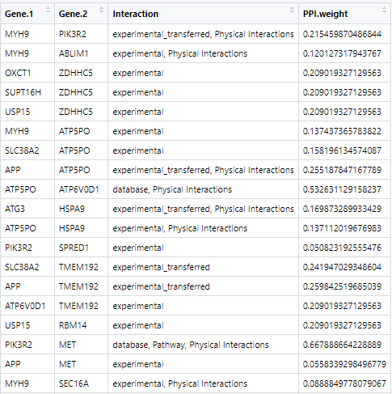

Finding Pathways from PTMs: An Analysis Guide
Nagashree Avabhrath, Mikhail Bailey, Mark Grimes, Madison Moffett, Grant Smith
PTMsToPathways.RmdThis vignette is intended to be a step-by-step guide to walk users through the process of using the PTMsToPathways package. It includes an example pipeline demonstrating how to run the full analysis along with descriptions of each function. this pipeline must be run in order as subsequent steps require the data produced in previous steps. Estimated run-times are included with each description and are based on a preliminary dataset of ~9,000 post-translational modifications and 70 experimental conditions processed with a 12th Gen i5 processor and 8GB of RAM.
This Package
The PTMsToPathways package takes mass-spectrometry data of post-translational modifications under different experimental conditions and implicates pathways that are involved. These pathways are generated based on analysis of which ptms cluster together (based on the same environmental conditions) compared to how those proteins are known to interact.
An important note about this package: there are no returned outputs from any of the functions. All outputs listed are assigned to the Global Namespace in order to prevent loss of data and promote ease of use.
Starting Data
This package provides an example data set using 497 ptms and 69 experimental conditions in the correct format for entry. Below is an example of a section of the input dataset:
dim(PTMsToPathways::ex.ptmtable)
PTMsToPathways::ex.ptmtable[38:50, 1:4]
#> [1] 497 69
#> H3122SEPTM.C1 H3122SEPTM.C2 H3122SEPTM.C3 H3122SEPTM.D1
#> CTTN ack K107 19.23272 19.85052 19.58630 21.23678
#> CTTN ack K124 17.50665 19.73125 19.12403 21.14083
#> CTTN ack K161 NA NA NA NA
#> CTTN ack K171 NA NA NA NA
#> CTTN ack K198 20.53742 20.89560 20.04847 21.37846
#> CTTN ack K235 20.62203 20.74460 21.06424 22.02580
#> CTTN ack K272 NA NA NA 21.44114
#> CTTN ack K309 21.52164 21.03127 21.14289 22.49696
#> CTTN ack K87 19.61967 20.63351 20.49436 22.14973
#> CTTN p S156 21.09816 23.48837 22.33529 23.80410
#> CTTN p S405 NA NA NA NA
#> CTTN p S417 NA 18.22809 18.97026 17.71552
#> CTTN p S418 NA 18.22809 18.97026 17.71552Note that it is very important that the rownames are the names of post-translational modifications. All of their respective columns are the environmental conditions under which the post-translational modifications occurred. NAs – which are importantly not zeroes – represent condition-PTM combinations that were not studied while the numeric values are data output by the mass spectrometer. Ambigious PTMs, cases where a PTM could be any one of several PTMs, should also be separated by semicolons. (I.e. “AARS ubi k747; AMBLIL p U123”).
Preprocessing Data
For data that does not conform to the above structure, the data must be converted. The following provides a set of general functions that may assist in this process.
Importing the Dataframe
R supports many file types and can automatically convert them into a data frame. For example, read.csv() will take a csv file and convert it into a data frame. The csv file type is recommended for data storage.
Turning Columns of PTMs into Rownames
If there is/are column(s) that contain parts of PTM names, the following command concatenates those columns and converts them into data frame. The vector “name.columns” is the indices of the columns which contain names. For the example below, the strings in columns 1, 2, and 3 will be concatenated in each row and then turned into a rowname. It is also possible to have name.columns equal a vector like c(2, 4, 6), which takes columns 2, 4, and 6.
Replacing Patterns
If the list of PTMs possesses symbols that are unnecessary such as “AARS ~K ubi K747”, this command will remove all strings included in the “patterns” vector from the rownames. Any pattern can be chosen so long as the user ensures that any special character (such as $ or @) have a “\\” in front of them.
Pipeline
Step 1: Make Cluster List
Code
MakeClusterList(ptmtable, correlation.matrix.name = "ptm.correlation.matrix", clusters.list.name = "clusters.list", tsne.coords.name = "all.tsne.coords", common.clusters.name = "common.clusters", keeplength = 2, toolong = 3.5)
Figure 1 Example plot produced by MakeClusterList
calculated using Euclidean Distance. The Euclidean Distance between
every PTM is calculated and that information is put into a large matrix.
This matrix is then condensed using t-SNE to get coordinates in
two-dimensional space, which is what the above figure shows. These data
points – and the PTMs they represent – are put into clusters based on
these positions. This process is also undergone using Spearman
Dissimilarity and the average of Euclidean Distance and Spearman
Dissimilarity.

Figure 2 Output of MakeClusterList. Automatic print
statements from the function ordiplot from the package vegan.

Figure 3 The second cluster created by Euclidean Distance. The left column is the name of the PTM in this cluster. The right column is the cluster number.
 Figure 4
The second common cluster. All six of these post-translational
modifications were clustered together whether distance was calculated by
Spearman, Euclidean, or the average.
Figure 4
The second common cluster. All six of these post-translational
modifications were clustered together whether distance was calculated by
Spearman, Euclidean, or the average.
Figure 5 Coordinates of the t-SNE plot produced by Spearman Dissimilarity. Each row is a ptm, and each column is its positional location along the x, y, and z axes.
Description
Make Cluster List is the first step in the analyzing one’s data. This function takes the post-translational modification table and runs it through three calculations of distance: Euclidean Distance, Spearman Dissimilarity (1 - |Spearman Correlation|), and the average of the two of these. These calculations find the ‘distance’ between ptms based upon under what conditions they occur. In other words, they found how dissimilar each pair of PTMs are. These matricies are then run through t-SNE in order to put them into a 3-dimensional space and the clusters that are present in each present in each matrix are identified as well. Please note: t-SNE involves an element of randomness; in order to get the same results, set.seed(#) must be called. A correlation table is also produced based on the Spearman Correlation table.
Input
- ptmtable
- A data frame of post-translational modifications. The row names must
be PTM names and the column names must be drugs (experimental
conditions). Values of the table are numeric values that represent how
much the PTM has reacted to the drug or NA if that PTM wasn’t studied
under that condition.
- A data frame of post-translational modifications. The row names must
be PTM names and the column names must be drugs (experimental
conditions). Values of the table are numeric values that represent how
much the PTM has reacted to the drug or NA if that PTM wasn’t studied
under that condition.
- correlation.matrix.name
- Desired name for the correlation matrix to be saved as; defaults to
“ptm.correlation.matrix”
- Desired name for the correlation matrix to be saved as; defaults to
“ptm.correlation.matrix”
- clusters.list.name
- Desired name for the lists of clusters to be saved as; defaults to
“clusters.list”
- Desired name for the lists of clusters to be saved as; defaults to
“clusters.list”
- tsne.coords.name
- Desired name for the lists of tsne coordinates to be saved as; defaults to “all.tsne.coords”
- common.clusters.name
- Desired name for the clusters that all 3 methods found in common; defaults to “common.clusters”
- keeplength
- MakeClusterList only saves subsets whose size is strictly greater than keeplength; defaults to 2
- example: [‘AARS’, ‘ABR’] will be discarded unless keeplength < 2
- toolong
- Threshold for cluster separation; defaults to 3.5
Output
- ptm.correlation.matrix (or otherwise named by
correlation.matrix.name)
- A data frame showing the correlation between ptms (as the rows and the columns). NAs are placed along the diagonal so as to not skew the data with self-similarity.
- clusters.list (or otherwise named by list.name)
- A list of three-dimensional data frames used to represent ptms in space to show relationships between them based on distances. Based on Euclidean Distance, Spearman Dissimilarity, and SED (the average between the two).
- all.tsne.coords (or otherwise named by tsne.coords.name)
- A list of matrices containing points in 3D space based on Euclidian, Spearman, and SED distances, found with Rtsne.
- common.clusters (or otherwise named by common.clusters.name)
- A list of clusters that are in all 3 distance metrics.
Step 2: Make Correlation Network
Code
MakeCorrelationNetwork(common.clusters, ptm.correlation.matrix, ptm.cccn.name = "ptm.cccn", gene.cccn.name = "gene.cccn")Figure 6 First 17 rows and columns of the ptm.cccn produced by MakeCorrelationNetwork. PTMs that cluster together in all three distance metrics have entries that represent how strongly they correlate, or how alike their responses are under the same environment. PTMs that don’t cluster in all three distance metrics are correlated by an NA. Self-correlations are also marked by an NA to prevent self-similarity skewing.
 Figure 7 First
17 rows and columns of the genes.cccn produced by
MakeCorrelationNetwork. The ptm.cccn was condensed by combining all of
the scores between PTMs corresponding to one gene. These new summed
scores make up the scores of the genes.ccn. Self-correlations are marked
by an NA to prevent self-similarity skewing.
Figure 7 First
17 rows and columns of the genes.cccn produced by
MakeCorrelationNetwork. The ptm.cccn was condensed by combining all of
the scores between PTMs corresponding to one gene. These new summed
scores make up the scores of the genes.ccn. Self-correlations are marked
by an NA to prevent self-similarity skewing.
Figure 8 Plot produced by MakeCorrelationNetwork. I have no idea what I’m looking at.
Description
Make Correlation Network filters the correlation matrix of PTMs by specific PTMs that cluster together or have react similarly to the same conditions. It groups the PTM correlation matrix based on the Genes of PTMs. By summing these submatrices, it produces a gene by gene cocluster correlation network shows strength of relationships between proteins using the common clusters between the three distance metrics. The PTM version is also saved for analysis by the user.
Input
-common.clusters - A character vector of PTMs. It is not required for
it to be the one made in MakeClusterList - ptm.correlation.matrix
- A data frame showing the correlation between ptms (as the rows and the
columns). NAs are placed along the diagonal so as to not skew the data
with self-similarity
- ptm.cccn.name - Desired name for the PTM cocluster correlation network
matrix; defaults to ptm.cccn
- gene.cccn.name
- Desired name for the gene cocluster correlation network matrix;
defaults to gene.cccn
Output
- ptm.cccn (or otherwise named by ptm.cccn.name)
- The PTM correlation matrix filtered by specific PTMs that cluster
together by reacting similarly to the same conditions
- The PTM correlation matrix filtered by specific PTMs that cluster
together by reacting similarly to the same conditions
- gene.cccn (or otherwise named by gene.cccn.name)
- A matrix showing strength of correlations between genes using the common clusters between the three distance metrics (Euclidean, Spearman, and Combined (SED)) and the ptm.cccn
Step 3: Retrieve Database Edgefiles
Description
PPI (protein-protein interaction) databases are consulted in order to filter the clusters by proteins that are known to interact with each other as well as how strongly they are known to interact. The standard recommended PPI database is STRINGdb; getting data from this database is the first (optional) step. This is accomplished with the function GetSTRINGdb. The function GetSTRINGdb requires the STRINGdb package to be downloaded. Code for this is supplied with the code to run the function itself. Please note, however, that the user may consult any database that they choose. After getting STRINGdb data (or not), the user runs MakeDBInput which produces a text file of all of their gene names. This information can be copy and pasted into any database that the user chooses in order to get other PPI networks. Step three is getting a GeneMANIA network, which is also optional but recommended. The user pastes their input data into GeneMANIA on the Cytoscape app and saves the edgefile and the nodetable. These files are then input into ProcessGMEdgefile in order to sort the data.
Note again that the database input can be used in any PPI database that the user chooses, though this package only explicitly supports STRINGdb and GeneMANIA. If another database is chosen, its file will have to be filtered manually by the user before moving on to step 4. The file should have four columns. Column one and two should strictly be labeled “Gene.1” and “Gene.2” in order to integrate with other PPI databases. Column three should name the interaction type between the two proteins (naming of this column is not important). The fourth column should contain the edgeweight and may be named however the user chooses. It is recommended, though, that the database is specified as well as the term ‘weight’ in the column name.
Part 1 — Get STRINGdb Data
Code
if (!require("BiocManager", quietly = TRUE)) install.packages("BiocManager")
BiocManager::install("STRINGdb")
GetSTRINGdb(gene.cccn, stringdb.name = "stringdb.edges", nodenames.name = "nodenames")
Figure 9 First 18 rows of stringdb.edges produced by
GetSTRINGdb. The first two columns represent the genes that are known to
interact. The second column is the type of interaction. The GetSTRINGdb
function limits the interaction types to database, database_transferred
(database information from other species’ that are homologous to
humans), experimental, and experimental_transferred (database
information from other species’ that are homologous to humans). The
final column is the score associated with this interaction.

Figure 10 First 18 rows of nodenames produced by
GetSTRINGdb. Nodenames is a data frame consisting of every gene in
gene.cccn. This represents all of the genes of the study (that
cocluster).
Input
- gene.cccn
- A matrix showing strength of correlations between genes using the
common clusters between the three distance metrics (Euclidean, Spearman,
and Combined (SED)) and the ptm.cccn
- A matrix showing strength of correlations between genes using the
common clusters between the three distance metrics (Euclidean, Spearman,
and Combined (SED)) and the ptm.cccn
- stringdb.name
- Desired name for STRINGdb data; defaults to stringdb.edges
- Desired name for STRINGdb data; defaults to stringdb.edges
- nodenames.name
- Desired name for list of gene names; defaults to nodenames
Part 2 — Get File for Database Input
Code
MakeDBInput(gene.cccn, file.path.name = "db_nodes.txt")
Figure 11 First 15 lines from the produced text file named by file.path.name. Lists all of the gene names separated by newlines with no other extra characters for clean copy and pasting into a database input.
Input
- gene.cccn
- A matrix showing strength of correlations between genes using the
common clusters between the three distance metrics (Euclidean, Spearman,
and Combined (SED)) and the ptm.cccn
- A matrix showing strength of correlations between genes using the
common clusters between the three distance metrics (Euclidean, Spearman,
and Combined (SED)) and the ptm.cccn
- file.path.name
- Desired path for file to be saved as; defaults to db_nodes.txt
Part 3 — Process GeneMANIA File
Code
ProcessGMEdgefile(gm.edgefile.path, gm.nodetable.path, db_nodes.path, gm.network.name = "gm.network")
Figure 12 The node table produced by the GeneMANIA query.

Figure 13 The edge table produced by the GeneMANIA query.

Figure 14 First 44 rows of the GeneMANIA network. The first two columns represent the genes that are known to interact. The second column is the type of interaction. The ProcessGmEdgefile function limits the interaction types to Pathway and Physical Interactions. The final column is the score associated with this interaction.
Input
- gm.edgefile.path
- Path to the GeneMANIA edgefile
- gm.nodetable.path
- Path to the GeneMANIA nodetable
- db_nodes.path
- Path to the nodenames file created in make_db_input
- gm.network.name
- Desired name for the output of the GeneMANIA network, defaults to gm.network
Step 4: Build PPI Network
Code
BuildPPINetwork(stringdb.edges = NA, gm.network = NA, db.filepaths = c(), ppi.network.name = "ppi.network")
Figure 15 First 19 rows of the ppi_network produced by
find_ppi_edges. The first two columns represent the two genes that
interact according to the consulted PPI databases. The third column is
all of the interaction types concatenated together from each database.
All subsequent columns (two, in the base case of just using STRINGdb and
GeneMANIA), show the weights of the interaction from the associated
database. These have been normalized to all be on a scale of 0-1.
Description
The purpose of BuildPPINetwork is to combine the data about desired protein-protein interactions from each of the provided databases. This package explicitly processes STRINGdb and GeneMANIA in Step 3, but the user may consult as many databases as desired (the processing for which is described in Step 3). BuildPPINetwork combines these databases as efficiently as possible while retaining desired edgeweights from each database. BuildPPINetwork also normalizes the weights on a scale of 0-1 and removes duplicate rows from the data frame.
Input
- stringdb.edges (produced optionally in step 3)
- Data frame of consisting of the network of interactions from the
genes of study pulled from the STRINGdb database; defaults to NA
- Data frame of consisting of the network of interactions from the
genes of study pulled from the STRINGdb database; defaults to NA
- gm.network (produced optionally in step 3)
- GeneMANIA network of protein-protein interactions from the genes of
study; defaults to NA
- GeneMANIA network of protein-protein interactions from the genes of
study; defaults to NA
- db.filepaths (produced optionally in step 3)
- A vector of paths to the additional ppi network files; defaults to
an empty vector
- A vector of paths to the additional ppi network files; defaults to
an empty vector
- ppi.network.name
- Desired name for the output protein-protein interaction network using all entered database input; defaults to ppi.network
Step 5: Cluster Filtered Network
Code
ClusterFilteredNetwork(gene.cccn, ppi.network, cfn.name = "cfn")
Figure 16 First 19 rows of the cfn produced by
ClusterFilteredNetwork. The first two columns represent the two genes
that interact according to the consulted PPI databases. The third column
is all of the interaction types concatenated together from each
database. The final column is the sum of the weights from each inputted
database.
Description
Cluster Filtered Network checks all of the edges in the PPI network to see ensure that both of the genes are within the cocluster correlation network and that its weight is nonzero. If either of these conditions are not met, then it will be removed from the list of PPI edges. This new, cluster filtered network is then returned.
Input
- gene.cccn
- A matrix showing strength of correlations between genes using the
common clusters between the three distance metrics (Euclidean, Spearman,
and Combined (SED)) and the ptm.cccn
- A matrix showing strength of correlations between genes using the
common clusters between the three distance metrics (Euclidean, Spearman,
and Combined (SED)) and the ptm.cccn
- ppi.network
- A dataframe representing how strongly proteins are known to
interact
- A dataframe representing how strongly proteins are known to
interact
- cfn.name
- Desired name for the output of ClusterFilteredNetwork; defaults to cfn
Step 6: Pathway Crosstalk Network
Code
PathwayCrosstalkNetwork(common.clusters, file = "bioplanet.csv", edgelist.name = "PTPedgelist", createfile = getwd())
Figure 12 Graph in Cytoscape - Didn’t add cuz not good yet Will exist at some point
Description
Note: This step is directory sensitive. The user can check and set the working directory in R using getwd() and setwd(“yourdirectoryhere”) respectively. It needs a path to the bioplanet file and will put an edgelist file in the working directory or the otherwise given path. If the file cannot be found, please check the working directory first.
Pathway Crosstalk Network requires input of an external database, bioplanet, that contains of groups of genes (proteins) involved in various cellular processes known as pathways. PCN turns this database into a list of pathways and converts those pathways into a pathway x pathway edgelist that possesses multiple weights, a jaccard similarity, and a score. The score is derived from Cluster-Pathway Evidence using the common clusters found in Make Correlation Network.
Input
- common.clusters
- The list of common clusters between all three distance metrics
(Euclidean, Spearman, and SED) made by MakeCorrelationNetwork
- The list of common clusters between all three distance metrics
(Euclidean, Spearman, and SED) made by MakeCorrelationNetwork
- file
- File path for the pathway data from Bioplanet (can also take in a
data frame that is formatted correctly like the one found by running
View(ex.bioplanet) or ?ex.bioplanet, but this is not recommended as
formatting must match sample data exactly)
- File path for the pathway data from Bioplanet (can also take in a
data frame that is formatted correctly like the one found by running
View(ex.bioplanet) or ?ex.bioplanet, but this is not recommended as
formatting must match sample data exactly)
- edgelist.name
- The desired name of the Pathway to Pathway edgelist file created
(‘.csv’ will automatically be added to the end); defaults to
edgelist
- Intended for use in Cytoscape
- The desired name of the Pathway to Pathway edgelist file created
(‘.csv’ will automatically be added to the end); defaults to
edgelist
- createfile
- The path for the .csv file to be created. Defaults to the working directory.
- Putting a non-character value (Boolean FALSE) will result in nothing being written to a file.
Output
- edgelist.csv (or otherwise named by edgelist.name)
- An edgelist file that is created in the working directory. Contains pathway source-target columns, with edge weights of their jaccard similarity and their Cluster-Pathway Evidence score. Info about the Cluster-Pathway Evidence score can be found at: https://journals.plos.org/ploscompbiol/article?id=10.1371/journal.pcbi.1010690
Step 7: Graph Cluster Filtered Network
Code
GraphCfn(cfn, ptmtable, funckey = PTMsToPathways::ex.funckey, Network.title = "cfn", Network.collection = "PTMsToPathways",
visual.style.name = "PTMsToPathways.style", background.color = "#949494", edge.label.color = '#17202a', node.label.color = '#000000',
default.font = "Times New Roman", node.font.size = 20, edge.font.size = 8, edge.line.style = 'SOLID',
edge.opacity = 175, edge.label.opacity = 255, border.opacity = 255, node.label.opacity = 255, node.fill.opacity = 255)
Figure 13 Default cytoscape graph. Nodes represent the
genes of the study. The score of each node is taken as the minimum value
of the gene in the ptmtable. Edges are the lines between the nodes and
they represent relationships. See the key below for a full description
of each characteristic.
Description
This optional function GraphCfn creates a graph using the cluster filtered network in the Cytoscape app.
Input
- cfn
- A version of ppi.network with only the edges that exist in
cccn.matrix and have non-zero weights
- A version of ppi.network with only the edges that exist in
cccn.matrix and have non-zero weights
- ptmtable
- A data frame of post-translational modifications. Formatted with
numbered rows and the first column containing PTM names. The rest of the
column names should be drugs (experimental conditions). Values of the
table are numeric values that represent how much the PTM has reacted to
the drug or NA if that PTM wasn’t studied under that condition.
-Network.title
- Desired title for the created Cytoscape Network
- A data frame of post-translational modifications. Formatted with
numbered rows and the first column containing PTM names. The rest of the
column names should be drugs (experimental conditions). Values of the
table are numeric values that represent how much the PTM has reacted to
the drug or NA if that PTM wasn’t studied under that condition.
- Network.collection
- Desired name for the collection created on Cytoscape in which the network will reside
- background.color
- Hex code of background color of graph; defaults to ‘#fcf3cf’
- Hex code of background color of graph; defaults to ‘#fcf3cf’
- edge.label.color
- Hex code of edge label color of graph; defaults to ‘#17202a’
- Hex code of edge label color of graph; defaults to ‘#17202a’
- node.label.color
- Hex code of node label color of graph; defaults to ‘#145a32’
- default.font
- Font style of edge and node names; defaults to “Times New
Roman”
- Font style of edge and node names; defaults to “Times New
Roman”
- node.font.size
- Font size of the node name; defaults to 12
- Font size of the node name; defaults to 12
- edge.font.size
- Font size of the edge name; defaults to 8
- edge.line.style
- Type of edge style; defaults to “SOLID”
- options include: “PARALLEL_LINES”, “MARQUEE_EQUAL”, “DOT”, “EQUAL_DASH”, “LONG_DASH”, “CONTIGUOUS_ARROW”, “MARQUEE_DASH”, “DASH_DOT”, “BACKWARD_SLASH”, “FORWARD_SLASH”, “VERTICAL_SLASH”, “SOLID”, “SEPARATE_ARROW”, “MARQUEE_DASH_DOT”, “ZIGZAG”, “SINEWAVE”
- Type of edge style; defaults to “SOLID”
- edge.opacity
- Opacity of the edge line on a scale of 0 - 255 with 0 being
transparent; defaults to 175
- Opacity of the edge line on a scale of 0 - 255 with 0 being
transparent; defaults to 175
- edge.label.opacity
- Opacity of the edge label on a scale of 0 - 255 with 0 being
transparent; defaults to 255
- Opacity of the edge label on a scale of 0 - 255 with 0 being
transparent; defaults to 255
- border.opacity
- Opacity of the node border on a scale of 0 - 255 with 0 being
transparent; defaults to 255
- Opacity of the node border on a scale of 0 - 255 with 0 being
transparent; defaults to 255
- node.label.opacity
- Opacity of the node label on a scale of 0 - 255 with 0 being
transparent; defaults to 255
- Opacity of the node label on a scale of 0 - 255 with 0 being
transparent; defaults to 255
- node.fill.opacity
- Opacity of the node fill on a scale of 0 - 255 with 0 being transparent; defaults to 255
Key
The thicker the edge is, the stronger a correlation between these two genes. The border and shape of the node represent the type of protein this gene is.
- Node Size
- Greater the node size, larger the absolute value of the score
- Greater the node size, larger the absolute value of the score
- Blue Node
- Negative score
- Negative score
- Yellow Node
- Positive score
- Positive score
- Green Node
- Approximately zero score
Node Shapes: - “ELLIPSE”
- unknown - “ROUND_RECTANGLE”
- receptor tyrosine kinase - “VEE”
- SH2 protein or - SH2-SH3 protein - “TRIANGLE”
- SH3 protein - “HEXAGON”
- tyrosine kinase - “DIAMOND”
- SRC-family kinase - “OCTAGON”
- kinase or - phosphatase - “PARALLELOGRAM”
- transcription factor - “RECTANGLE” - RNA binding protein
Node Border Colors: - Orange
- deacetylase
or
- acetyltransferase
- Blue
- demethylase
or
- methyltransferase
- Royal Purple
- membrane protein
- Red
- kinase
or
- tyrosine kinase
or
- SRC-family kinase
- Yellow
- phosphatase
or
- tyrosine phosphatase
- Lilac - G protein-coupled receptor
or
- receptor tyrosine kinase
- Grey
- default
- Edge Thickness
- Stronger correlation
Edge Colors: - Red
- Phosphorylation
or
- pp
or
- controls-phosphorylation-of
- Bright Magenta
- controls-expression-of
- Dull Magenta
- controls-transport-of
- Purple
- controls-state-change-of
- Blood Orange
- Acetylation
- Lime Green
- Phystical interactions
- Green
- BioPlex
- Dull Green
- in-complex-with
- Seafoam Green
- experiments
or
- experiments_transferred
- Cyan
- database
or
- database_transferred
- Teal - Pathway
or
- Predicted
- Dark Turquoise
- Genetic interactions
- Yellow-Orange
- correlation
- Royal Blue
- negative correlation
- Bright Yellow - positive correlation
- Grey
- combined_score - Dark Grey
- merged
- Light Grey
- intersect
- Black
- peptide
- Orange
- homology
- Dull Orange
- Shared protein domains - White
- Default
Arrow Types:
- Arrow - Phosphorylation
or
- pp
or
- controls-phosphorylation-of
or
- controls-expression-of
or
- controls-transport-of
or
- controls-state-change-of
or
- Acetylation
- No Arrow - Default